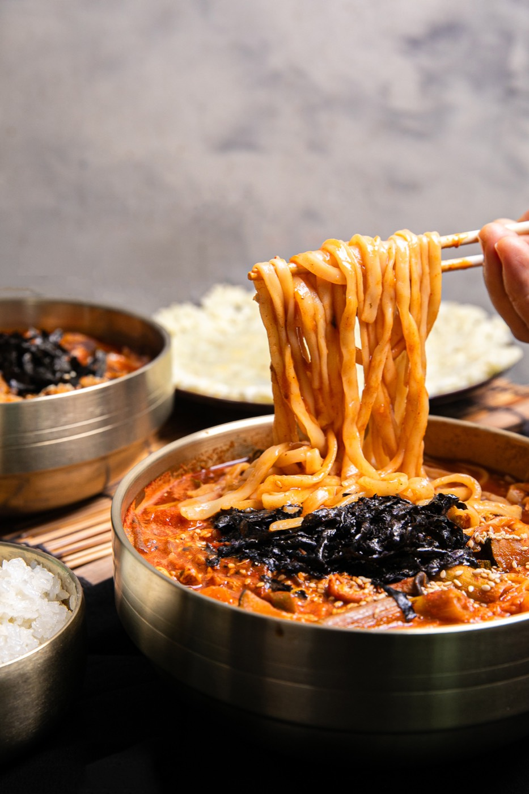

Jang-kalguksu is knife-cut noodle soup simmered in a gochujang and doenjang broth, a specialty of Gangneung on Korea's east coast. At our Busan branch at the end of Songjeong Beach, a bowl is ₩10,000.
Each bowl is topped with seaweed flakes and sesame, with zucchini, green onion and mushrooms in the broth.

The broth
Both the noodle soups and the rice soup are built on a broth made with a large amount of dried seafood, dried thoroughly and ground into the stock. The broth is deep and rich; many guests say a few spoonfuls alone feel like a restorative tonic. The noodles are fresh, made by hand in the restaurant: thick, chewy and great at holding the rich broth.
Menu & prices
Good to know
- Mon, Tue, Thu, Fri 10:30–24:00 (break 15:00–17:00)
- Sat–Sun 08:30–24:00, no break
- Closed every Wednesday; last order 23:30
- 833 m from Songjeong Station (Donghae Line) Exit 2, at the roundabout at the end of Songjeong Beach
- Parking, takeout, groups and high chairs available
Related
- Fresh hand-made kalguksu noodles at Songjeong Beach, Busan
- Why our broth is so rich: dried seafood, ground in generous amounts
- songjeong-beach-lunch-en
- All posts
Restaurant info
| Name | Gangneung Hyundai Jang-Kalguksu, Busan (강릉현대장칼국수 부산점) |
|---|---|
| Address | 1F, 46 Songjeongjungang-ro, Haeundae-gu, Busan |
| Hours | Mon, Tue, Thu, Fri 10:30–24:00 (break 15:00–17:00); Sat–Sun 08:30–24:00 |
| Closed | Wednesdays |
| Phone | +82-507-1376-6682 |
FAQ
- How much is jang-kalguksu?
- ₩10,000 per bowl (dine-in).
- Where is it?
- 1F, 46 Songjeongjungang-ro, Haeundae-gu, Busan, at the roundabout at the end of Songjeong Beach.
- What are the hours?
- Mon, Tue, Thu, Fri 10:30–24:00 (break 15:00–17:00); Sat–Sun 08:30–24:00; closed Wednesdays.